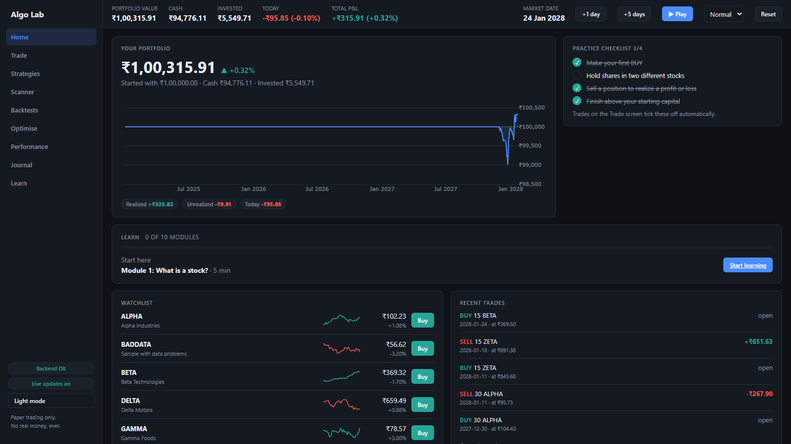
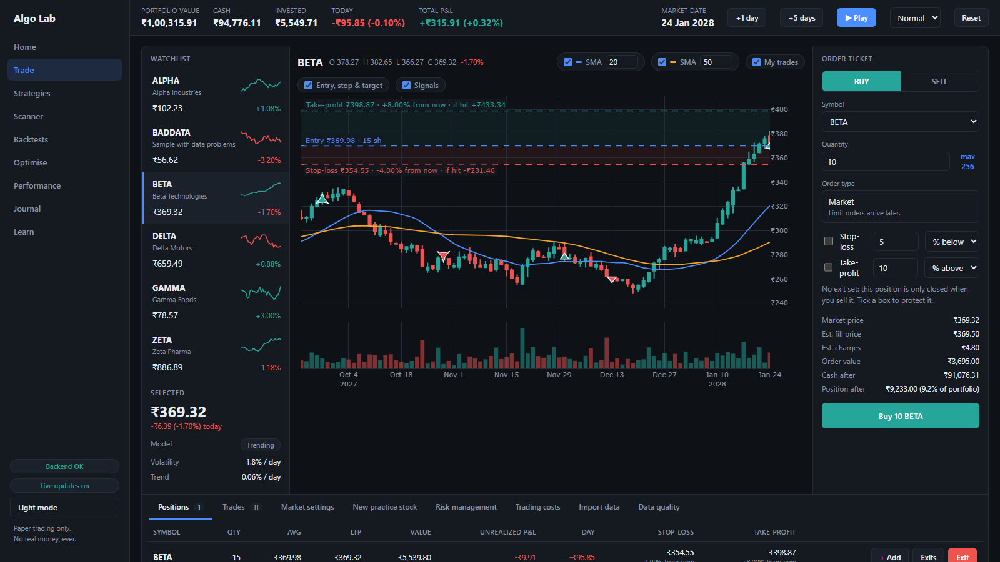
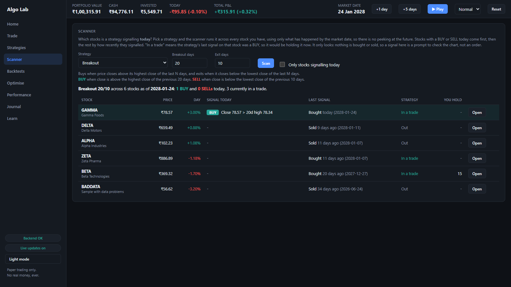
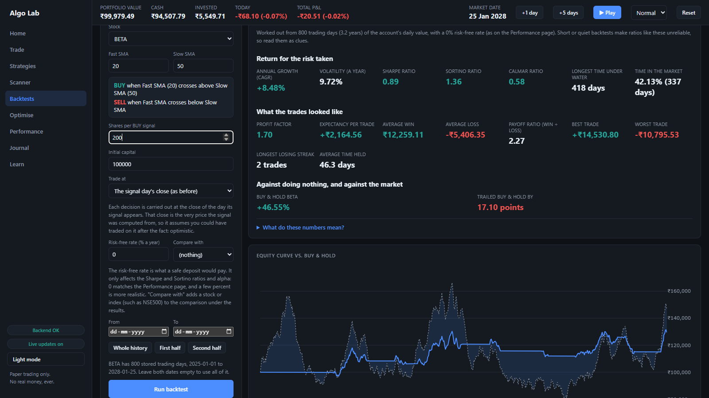
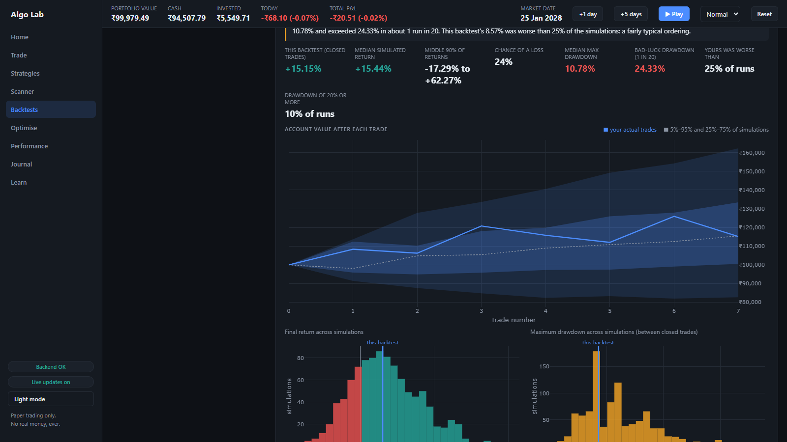
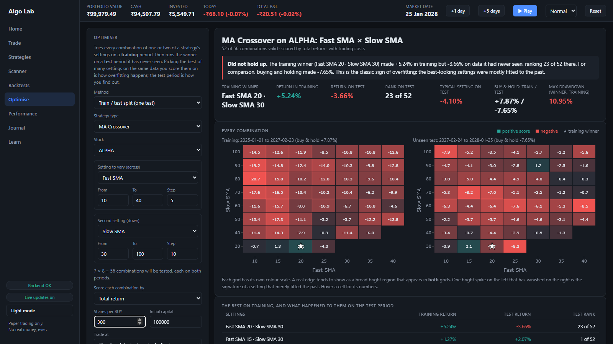

Learn algorithmic trading with paper money
Pick or write a rule for when to buy and sell, test it on history, and see whether the result was skill or luck. Because most beginners' backtests are luck.
Download for Windows Watch the tourFree and open source. No account, no API keys, no real money. About 22 MB.
A four-minute tour
Everything in the video is the real app, running on its built-in simulated stocks.
What you learn by using it
The app explains each idea in plain language, then lets you try it.
Ten short lessons
From "What is a stock?" to going live, each with a quiz and a Try it button that opens the app ready for the experiment.
Stop-loss and take-profit
Set both on an order, see them drawn on the chart, and watch them fire as the market moves one day at a time.
Price alerts
Ask to be told when a stock goes above or below a price. Alerts only notify; they never trade.
A scanner
Which stocks is a strategy signalling today? It only uses what has happened by the market date, so there is no peeking at the future.
Backtests with real metrics
Trading costs, realistic next-day fills, Sharpe, Sortino, drawdown, and a buy-and-hold comparison.
Is it luck or skill?
Monte Carlo reshuffles the trades thousands of times. The optimiser and walk-forward test catch settings that only fit the past.
Data quality
Catches what quietly fools a backtest: a price that halves because of an unadjusted split, or missing days.
Your own data
Import a daily-price CSV you downloaded yourself, or create practice stocks with a behaviour you choose.
A look inside
Screenshots of the app running on simulated stocks.






Install on Windows
There is no installer. You unzip a folder and double-click one file.
- Download the zip from the latest release.
- Right-click it and choose Extract All. Don't run it from inside the zip.
- Open the new folder and double-click
AlgoTradingLab.exe. - A black window opens and your browser opens the app. Leave the black window open while you use it. Close it to quit.
To check that your download is the one that was published, compare its fingerprint with the one on the release page:
Get-FileHash .\AlgoTradingLab-1.0.0-windows.zip -Algorithm SHA256
Where your data lives: C:\Users\<you>\AppData\Local\AlgoTradingLab. Updating or deleting the app folder never touches your portfolio.
To remove the app completely, delete the unzipped folder, and that data folder if you want your portfolio gone too.
Windows only for now. Prefer to run it from the source? See the README (needs Python).
Questions
Does it use real money?
No. Every trade is paper money. The app never places a real order and never connects to a broker.
Do I need an account or an API key?
No. The Windows download works with simulated stocks and with price files you import yourself. Nothing to sign up for, nothing to enter.
Can I use real stock prices?
Yes, with a file. Download daily price history (date, open, high, low, close, volume) as a CSV from a source whose terms let you use it this way, then open Trade, Import data. The stock replays day by day on the app's market clock.
Is this investment advice?
No. It is an educational tool. Simulated results, and even backtests on real history, say little about what a strategy will do next. Nothing here tells you to buy or sell anything.
Is it connected to NSE, Upstox, Angel One or any other company?
No. It is an independent learning project and is not affiliated with or endorsed by any exchange or broker.
How do I back up my data or move it to another computer?
Open Trade, Backup and press Download backup. You get one file with your whole portfolio, trades, strategies, saved backtests and price history. On the other computer, install the app and use Restore with that file. The Backup tab can also move your Learn progress, and the Trades, Positions and Backtests pages have Export CSV buttons for spreadsheets.
Does it send my data anywhere?
No. It runs on your own computer, listens only on your own machine, and keeps its data in the folder above.